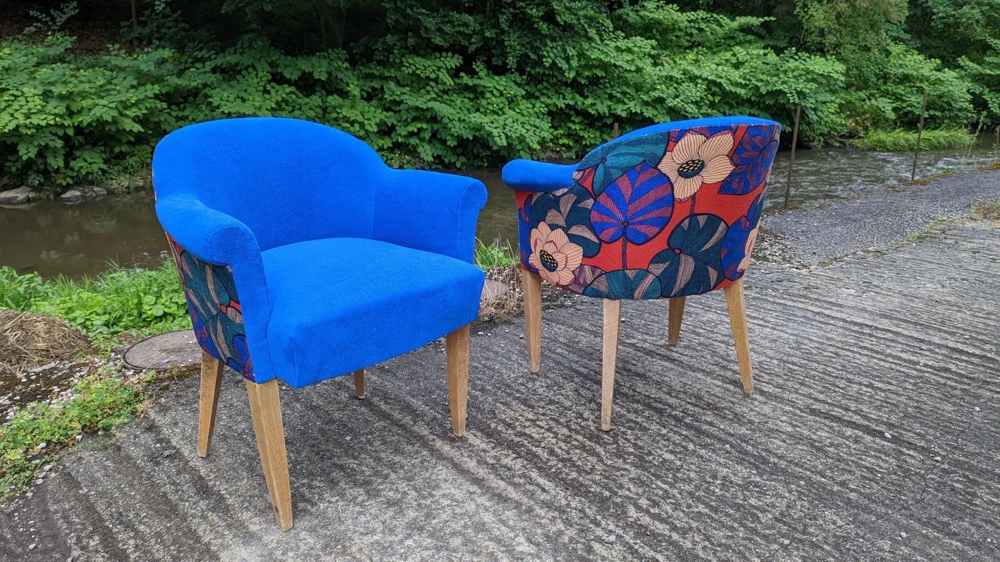
Une paire, tissus Casal et ThevenonVos sièges, refaits à Limoges.
La mère LaChaise s'occupe de la réfection de vos sièges, en mousse ou en crin, dans le respect des savoir-faire et des styles, avec un conseil personnalisé. Pour un fauteuil unique, choisi selon vos goûts et pensé pour votre intérieur.
37 ter rue François Chénieux87000 Limoges. Par téléphone ou à lmlachaise@gmail.com.
- Depuis 2018tapisserie d'ameublement à Limoges
- Mousse ou crinméthodes traditionnelles
- Histoire de l'artmaster, spécialité Art décoratif
- Coursmercredi soir et mardi matin
- Tissus d'éditeursCasal, Lelièvre, Nobilis…
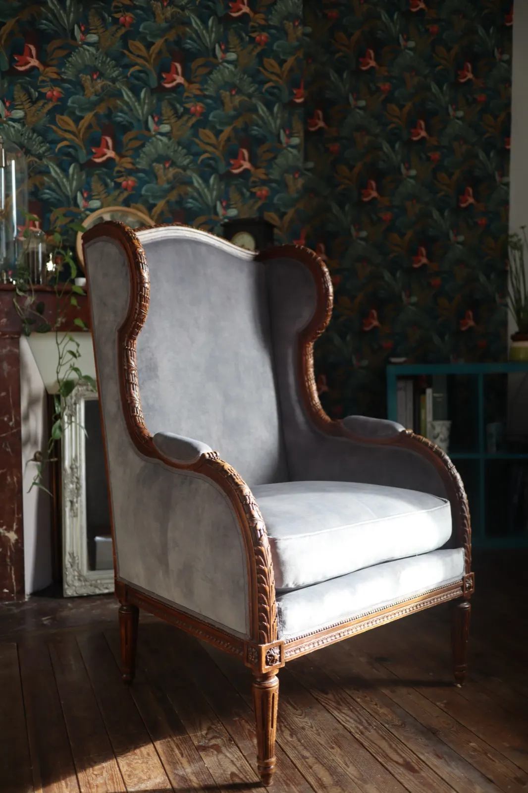
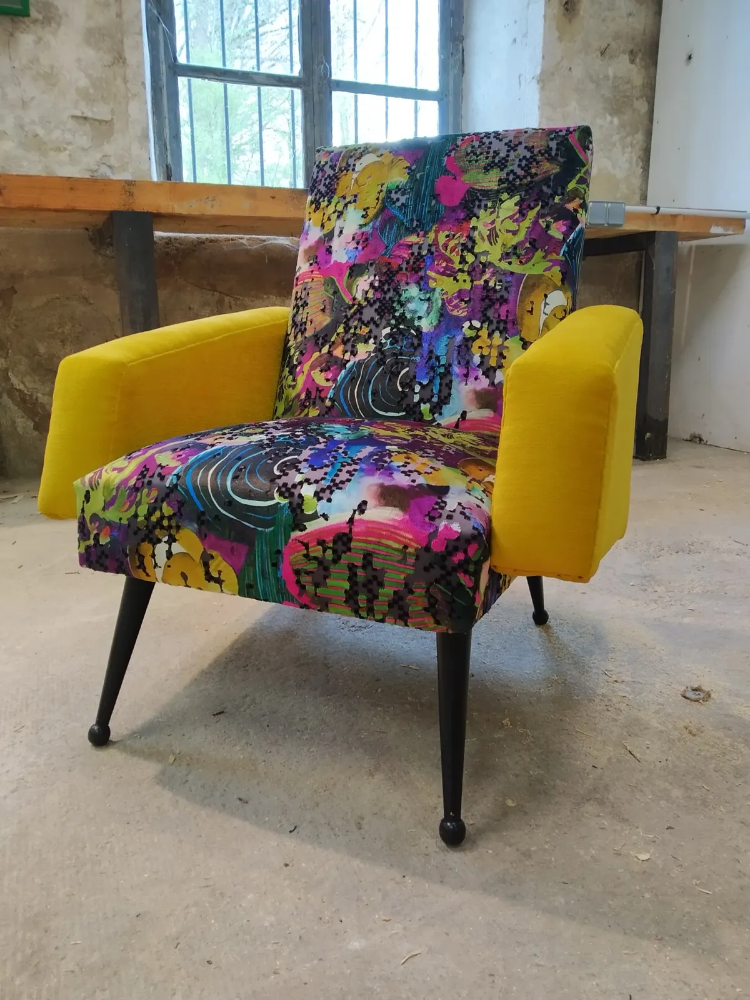
Du musée à l'atelier de tapisserie
Après un master en Histoire de l'art avec une spécialisation en Art décoratif, La mère LaChaise travaille dans plusieurs institutions culturelles. Que ce soit au musée d'Aubusson ou au Mobilier National, c'est là qu'elle découvre les métiers de l'artisanat d'art, et particulièrement celui de tapissier d'ameublement.
Elle quitte alors le monde de la culture pour se consacrer à cette passion, et fonde La mère LaChaise à Limoges en 2018.
De la tapisserie d'Aubusson à la tapisserie d'ameublement, il n'y a qu'un fil.
La réfection de vos sièges
Faire appel à un tapissier d'ameublement est le meilleur moyen d'avoir un fauteuil unique, réalisé à partir de vos goûts et spécialement conçu pour correspondre à votre intérieur.
- En mousse ou en crinpour la réfection de vos sièges
- Dans le respect des styleset des savoir-faire
- Méthodes traditionnellesavec un conseil personnalisé
- Devis gratuitet sur demande
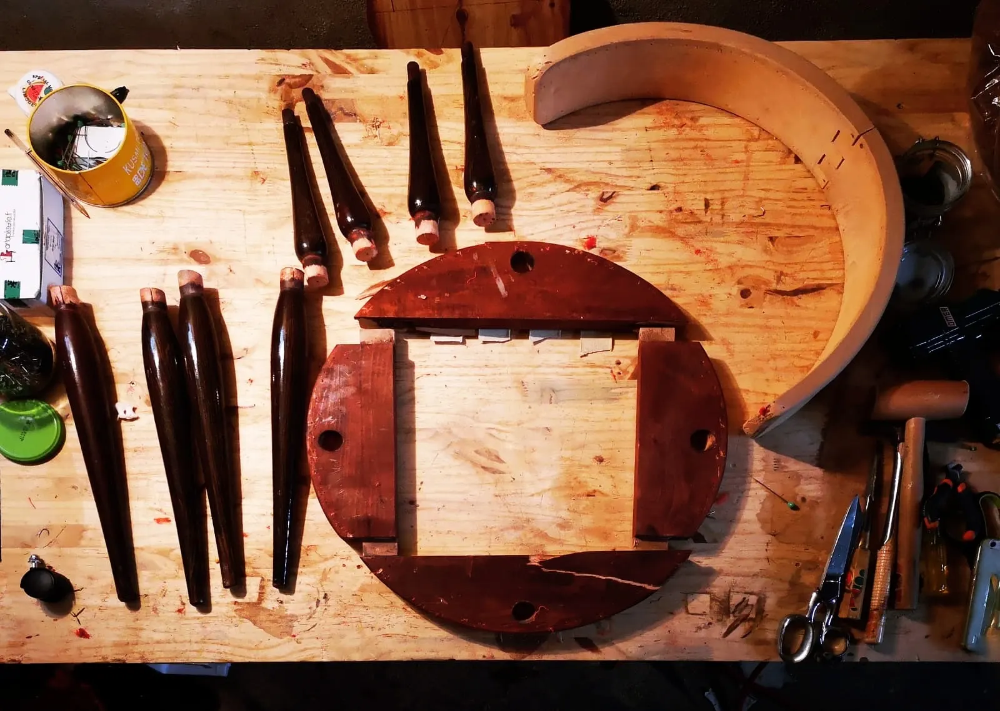
Un siège démonté, sur l'établiQuelques sièges refaits
Un aperçu des sièges passés par l'atelier. La galerie complète en montre 28.
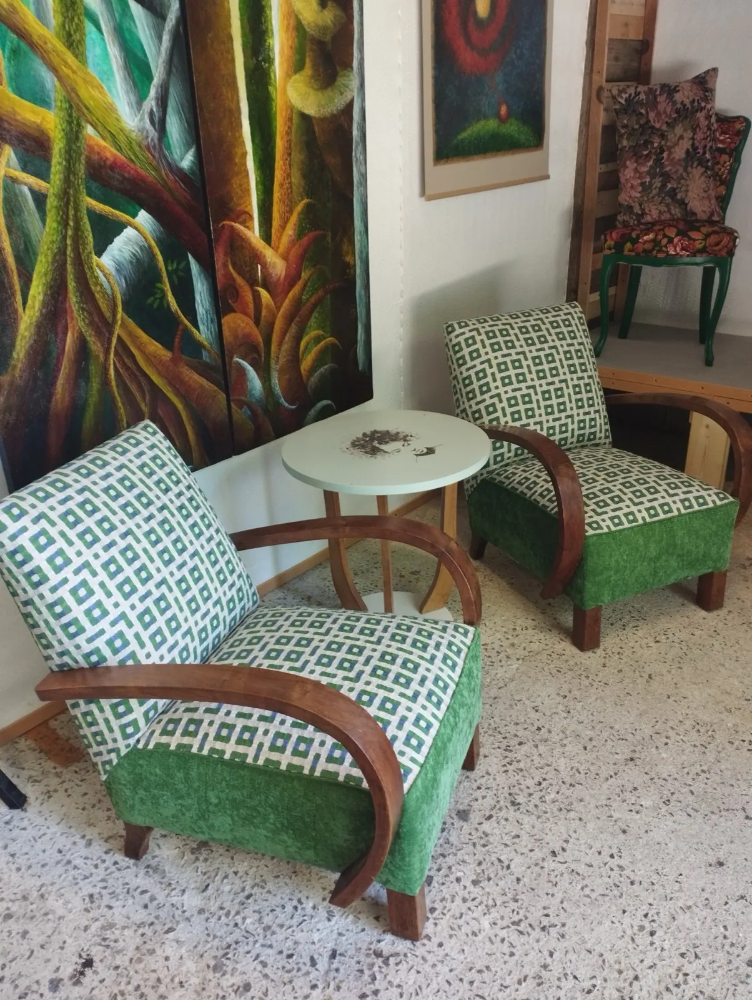
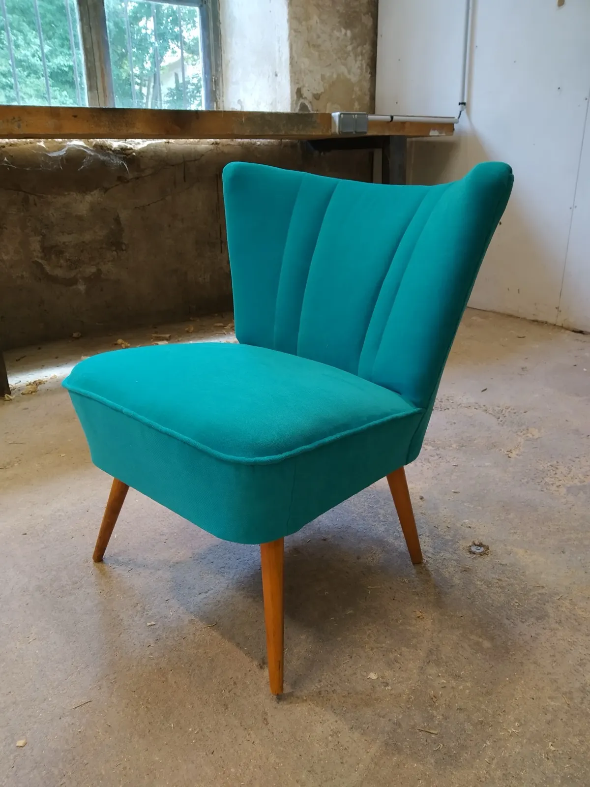
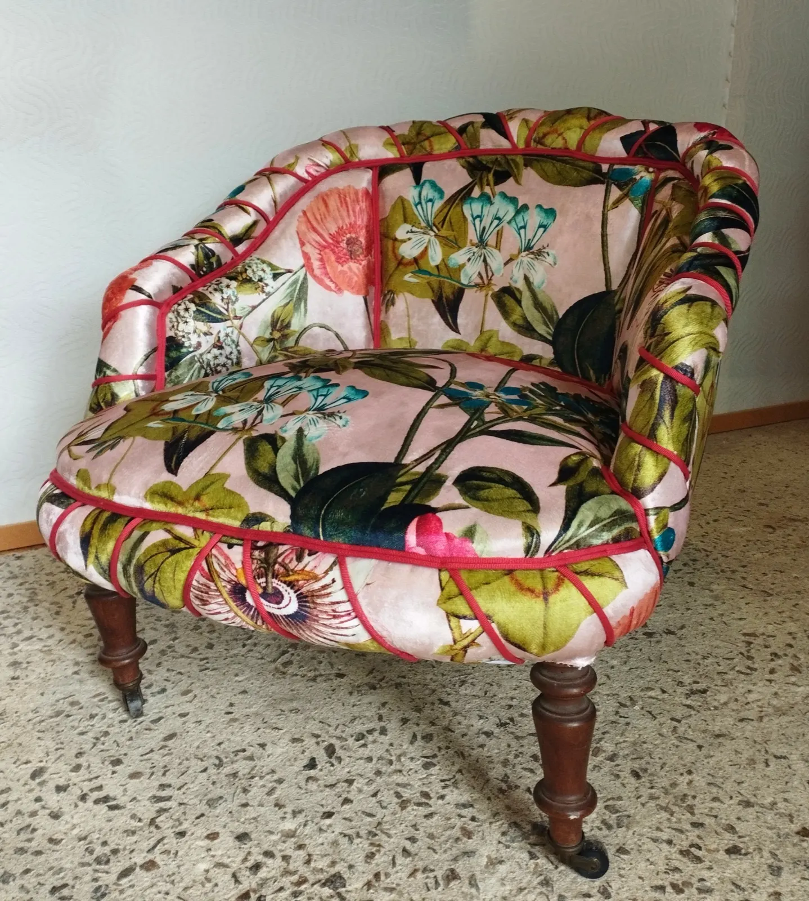
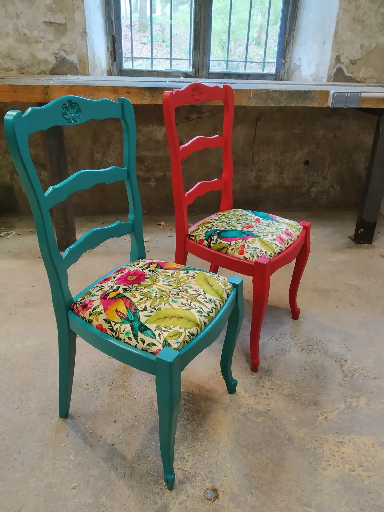
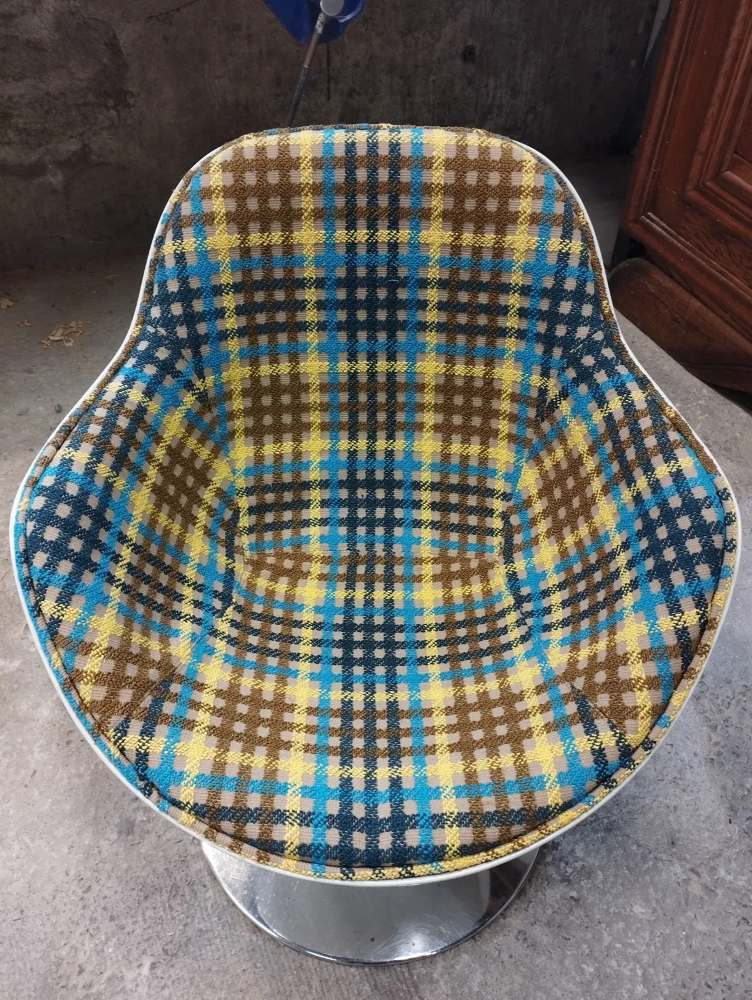
Apprendre la tapisserie d'ameublement
La mère LaChaise partage aussi sa passion à travers des cours, sous différents formats. Elle vous accompagne dans la réfection de votre propre siège.
- Les cours du mercredi soir17 h 30 à 19 h 30Au sein de l'atelier, tout au long de l'année, pour la réfection de votre siège.
- Les cours du mardi matin9 h à 12 hTous les 15 jours, à Javerdat.
- Les cours particuliersSur demandePour plus de renseignements, contactez La mère LaChaise.
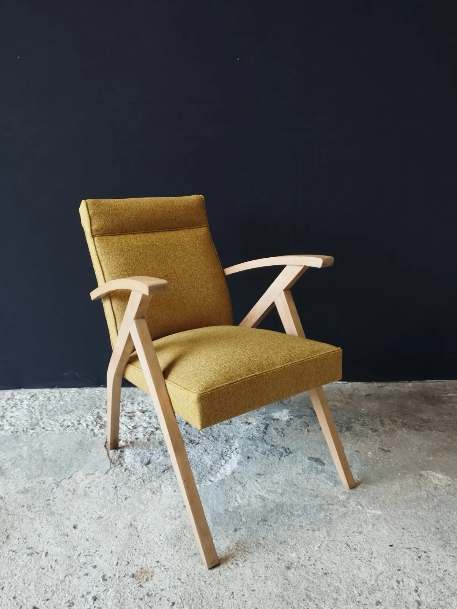
Commander votre tissu
La mère LaChaise travaille avec de nombreux éditeurs de tissus et de passementerie, notamment :
- Casal
- Belinac
- Blendworth
- Nobilis
- Lelièvre
- Aristide
- Thevenon
- Osborne & Little
- Zimmer + Rohde
- Houlès
- Les passementeries de l'Île de France
- et bien d'autres encore.
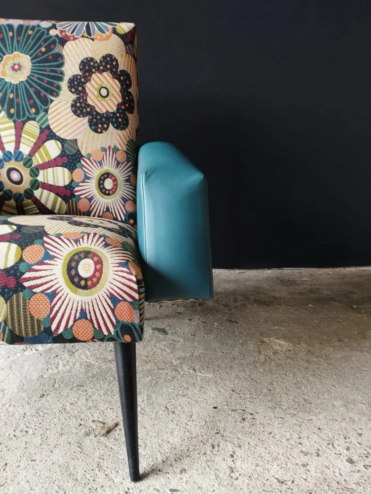
« L'art devrait être quelque chose comme un bon fauteuil dans lequel se reposer de la fatigue physique. »
Henri Matisse
Parlons de votre siège.
Un fauteuil à refaire, un tissu à choisir, une place aux cours : appelez ou écrivez, le devis est gratuit.
- Adresse
- 37 ter rue François Chénieux
87000 Limoges - Téléphone
- 07 83 01 91 09
- lmlachaise@gmail.com
- @la.mere.lachaise